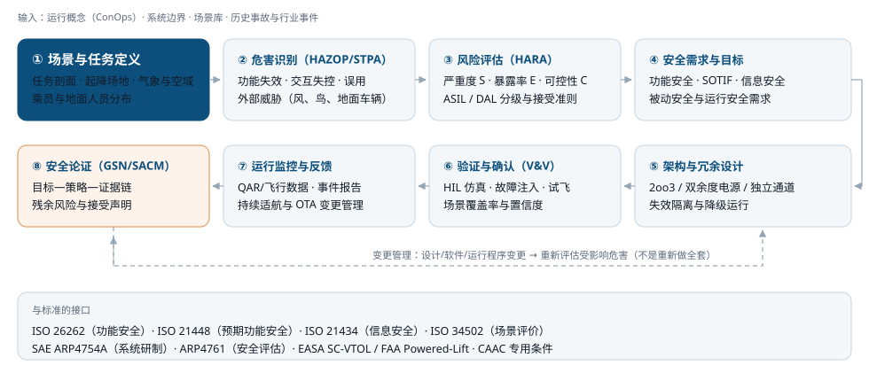
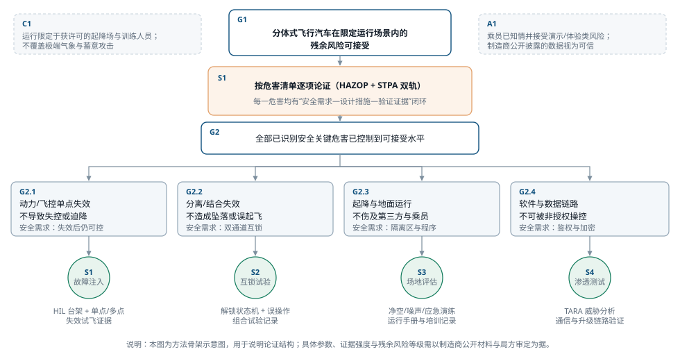

摘要What changes when the vehicle splits in two
分体式并没有减少安全问题的总量，它重新分配了这些问题：地面段的碰撞与电气安全被交给成熟的汽车体系处理，空中段的失效概率要求被压缩到一台更小的航空器上，而两者之间新增了一个高耦合、低频次、高风险的接口。围绕这个判断，本文给出五条结论。
- 最危险的不是飞行，而是“以为已经锁好”。对接接口的状态不确定性，会把一个地面操作失误直接转化为空中灾难。因此它的安全目标不是“提高可靠性”，而是让“未确认锁止”在物理与逻辑上都无法起飞。
- 分体式天然具备“阶段隔离”的优势。地面段与空中段的危害不共享暴露时间：车在高速上时飞行体不在飞，飞行体在飞时车在静止。这降低了部分风险，但也意味着驾驶员的注意力切换成为新的失效源。
- 功能安全的重点是“失效后可继续可控”。多旋翼的旋翼冗余使其具备容错能力，但前提是飞控能在毫秒级识别失效并重新分配推力；这要求传感器、计算与配电三条链路都具备独立性。
- SOTIF 风险被低估。低空阵风、地面效应、起降场视觉遮挡、电池 SOC 估计误差，都不属于“硬件坏了”，却足以造成事故；这类风险不能靠提高可靠性解决，只能靠场景限制与运行规程。
- 双证运行带来责任边界问题。“此刻它算车还是算机”，决定了适用哪套法规、由谁负责、保险如何理赔。这个边界必须在运行手册与产品定义中写清楚，而不是留给事故调查去解释。
分析方法Method: from ConOps to a safety argument
课程给出的九步法可以压缩成一条可执行的主线：场景定义 → 危害识别 → 风险评估 → 安全需求 → 架构设计 → 验证 → 运行监控 → 安全论证。本文按这条主线展开，并在每一步注明引用的标准与方法。

1.1 方法选择
| 方法 | 用途 | 为什么选它 |
|---|---|---|
| ConOps | 定义任务阶段与运行环境 | 分体式的危害高度依赖“处于哪个阶段”，必须先切分阶段 |
| HAZOP | 按引导词系统地扫描接口与流程 | 对接接口是一个“过程”，适合用偏差引导词（过早/过晚/未完成）扫描 |
| STPA | 识别控制行为缺失、错误时序、持续时间过长 | 飞控与对接都是“控制器—执行器”结构，STPA 能发现传统 FMEA 漏掉的交互失效 |
| HARA | 按 S/E/C 三维定级 | 把危害转成可分配的安全目标（ASIL/DAL 类比） |
| FTA / FMEA | 自顶向下与自底向上交叉验证 | 验证“单点失效不致命”这一关键假设 |
| GSN | 组织论证结构 | 让评审者能沿着“目标—策略—证据”检查，而不是读散文 |
HAZOP 擅长“流程偏差”，STPA 擅长“控制交互”。分体式同时具备这两类特征：对接是一个流程，飞行是一个控制系统。只用一种方法，必然留下盲区。
运行概念与系统边界ConOps and system boundary
把一次完整任务切成七个阶段。阶段切分的意义在于：同一个部件在不同阶段的风险完全不同，安全需求必须分阶段书写。
| 阶段 | 系统状态 | 关键操作 | 主要危害源 |
|---|---|---|---|
| P1 地面运输 | 飞行体折叠并锁止于陆行体 | 公路行驶、进出场地 | 交通事故、电池受撞、货物移位 |
| P2 展开与自检 | 展开机臂、上电、BIT | 机臂展开、系统自检 | 展开未到位、自检漏项、人员靠近 |
| P3 起飞 | 垂直爬升 | 解锁、起飞许可 | 未锁止起飞、地面人员进入、阵风 |
| P4 爬升与转场 | 定高巡航 | 航线飞行、避让 | 动力失效、导航丢失、空中冲突 |
| P5 进近与着陆 | 下降、悬停、接地 | 着陆决策、复飞 | 地面效应扰动、着陆冲击、场地占用冲突 |
| P6 折叠与回收 | 断电、折叠、锁止 | 回收、充电 | 带电折叠、夹伤、充电热失控 |
| P7 停放与维护 | 存储、定检 | 电池存储、部件更换 | 电池老化、维护差错、软件版本错误 |
2.1 系统边界的三条线
- 物理边界：陆行体、飞行体、对接接口、地面保障设备。
- 功能边界：飞行控制、动力与配电、对接控制、通信与监视、乘员保护。
- 责任边界：制造商（设计与持续适航）、运营人（运行与人员）、驾驶员（操纵决策）、场地方（场地与隔离）。
第三条线最容易被忽略，却是事故调查中最容易产生争议的地方。分体式的特殊之处在于：同一个人可能既是驾驶员又是“机长”，而切换时刻由一次地面操作触发。这意味着责任交接必须在程序上有明确的确认动作。
由于企业未公开飞控架构、冗余等级与伞降系统指标，本文在分析中采用“若具备/若不具备”的双分支表述，并在结论中指出哪些证据一旦缺失就无法完成论证。这不是回避，而是把不确定性显式化。
危害识别与风险评估Hazard identification and risk assessment
下表列出 12 项安全关键危害。严重度 S（1–4）、暴露率 E（1–4）、可控性 C（1–3）参照汽车 HARA 的定级思路，风险等级由三者综合得出（本文自定的教学分级，不等同于 ASIL 或 DAL）。
| ID | 危害描述 | 触发场景 | S | E | C | 等级 | 主要控制措施 |
|---|---|---|---|---|---|---|---|
| H1 | 对接未锁止即起飞，飞行体在爬升中脱开 | P3 起飞 | 4 | 2 | 1 | 极高 | 物理互锁 + 双通道状态确认 + 起飞禁止逻辑 |
| H2 | 对接过程中飞行体意外启动，旋翼伤人 | P2/P6 | 4 | 2 | 2 | 极高 | 上电互锁、区域感知、双人确认 |
| H3 | 单台或多台电机失效导致姿态失控 | P4 巡航 | 4 | 3 | 2 | 高 | 旋翼冗余、失效检测与推力重分配、可控迫降 |
| H4 | 动力电池热失控，起火或释能 | 全阶段 | 4 | 2 | 1 | 极高 | 电芯选型与成组隔离、热蔓延抑制、BMS 三级保护 |
| H5 | 飞控计算机单点失效，操纵中断 | P4 | 4 | 2 | 2 | 高 | 多通道表决（2oo3）、独立电源、看门狗切换 |
| H6 | 卫星导航丢失或欺骗，位置不可信 | P4/P5 | 3 | 3 | 2 | 高 | 多源融合（INS/视觉/气压）、完好性监测、降级策略 |
| H7 | 低空阵风或风切变超出控制能力 | P3/P4/P5 | 3 | 4 | 2 | 高 | 气象最低标准、风限包线、自动返航 |
| H8 | 与无人机、鸟类或障碍物空中冲突 | P4 | 4 | 3 | 2 | 高 | 空域申请、电子围栏、感知与避让（DAA） |
| H9 | 起降场地面人员进入旋翼危险区 | P3/P5 | 4 | 3 | 2 | 高 | 隔离区与围栏、地面信号员、起飞前扫视确认 |
| H10 | 乘员误操作或擅自干预操纵 | P3–P5 | 3 | 3 | 3 | 中 | 操纵权限设计、乘员简报、关键指令确认 |
| H11 | 软件升级被篡改或版本不匹配 | P7 | 4 | 1 | 2 | 中高 | 签名校验、双分区回滚、版本准入清单 |
| H12 | 陆行段碰撞导致飞行体电池受损，后续飞行中失效 | P1 → P3 | 4 | 2 | 2 | 高 | 电池箱结构防护、碰撞后强制检测、健康状态准入 |
3.1 风险分布的两个特征
第一，最高风险集中在“接口”与“能量”两类。H1、H2、H12 都发生在车与机的交界处；H3、H4 都与能量系统相关。这与整机式的风险分布明显不同——后者最大的风险通常在构型与控制。
第二，低频高后果事件占主导。对接一年可能只做几百次，但每次失误都可能致命。这类事件不能靠“统计可靠性”管理，只能靠设计上的不可发生性（物理互锁）与程序上的强制确认。
SR-01：在对接接口未通过双通道确认锁止之前，飞行体不得进入可产生升力的状态。该需求应通过“机械互锁 + 独立传感器 + 软件禁止逻辑”三重实现，任一层失效都不得导致起飞许可。
功能安全与冗余架构Functional safety and redundancy
载人飞行器的功能安全目标，可以用一句话概括：任何单点失效都不能直接导致失控；在此基础上，多点失效也要有明确的降级路径与着陆策略。
4.1 四条独立链路
| 链路 | 冗余方案（要求） | 失效后的降级 | 验证方式 |
|---|---|---|---|
| 飞行控制 | 三余度计算机 + 交叉表决；传感器独立供电与独立总线 | 单通道故障 → 降级为双余度；双通道故障 → 进入安全着陆模式 | 故障注入、HIL 台架、试飞验证 |
| 动力与旋翼 | N+2 以上旋翼冗余；相邻电机不同配电支路 | 失去 1–2 个旋翼仍可维持姿态并着陆 | 单/双电机失效试飞、推力重分配仿真 |
| 配电与能源 | 双电池组 + 独立母线；关键负载双路供电 | 单组失效 → 限制载荷，缩短航程返场 | 母线故障注入、容量与温升试验 |
| 对接控制 | 双通道位置传感 + 机械互锁 + 独立使能信号 | 任一通道异常 → 禁止起飞 / 禁止分离 | 误操作试验、组合故障试验 |
4.2 为什么“三重”而不是“双重”
双重冗余的问题在于无法区分“谁坏了”：两套系统给出不同结果时，系统只能二选一或直接失效。三余度通过表决可以定位故障源，从而在第一次失效后仍保持完整功能。代价是重量、功耗与成本——这也是为什么载人 eVTOL 普遍在飞控上采用三余度，而在非关键功能上采用双重。
4.3 最后的兜底：整机降落伞
如果产品配备了整机降落伞（弹射伞），它就构成了“结构完整性丧失”这类极端失效的最后一道屏障。但伞降本身引入新的安全需求：最低开伞高度、开伞姿态约束、着陆冲击耐受、以及开伞后对地面第三方的风险。它不能替代冗余设计，只能作为残余风险的缓解措施。是否配备待核实
SR-02：任何单一传感器或单一计算通道的故障，都不得导致飞行器进入不可恢复状态。这条需求看似与 SR-01 无关，实际上决定了“能不能在失效后安全落地”，而不是“能不能不失效”。
SOTIF 与人为因素Safety of the intended functionality and human factors
预期功能安全处理的是“系统没坏，但能力不够或场景超出设计域”的风险。对低空飞行器，这类风险往往比硬件失效更常见。
5.1 四类典型 SOTIF 触发
环境边界
阵风、下沉气流、地面效应导致的升力突变；雨雾降低能见度与传感器性能；高温导致电池功率受限。
感知局限
起降场周边的电线、塔吊、树木在视觉上难以分辨；卫星信号在楼宇间被遮挡或多径。
状态估计误差
电池 SOC 与健康状态（SOH）估计偏差，导致“以为还能飞 5 分钟”实际只剩 2 分钟。
人的误用
驾驶员把“演示模式”当“正常运行”；乘员在飞行中触碰操纵装置；地面人员误入隔离区。
5.2 人为因素：分体式特有的“模式切换”
整机式飞行汽车的驾驶员始终在“开车”或“开飞机”之间切换，但切换由同一个座位完成。分体式不同：切换发生在地面上，且伴随物理操作。这带来两个风险：
- 心智模型滞后：驾驶员刚完成长途驾驶，仍处于“道路模式”的注意力分配习惯，对空域观察不足。
- 程序压缩：在景区高频运营时，地面准备流程容易被“熟练地省略”，而省略的往往正是检查项。
对应的控制措施不是“加强培训”这类空话，而是把关键确认做成无法跳过的物理与界面约束：例如起飞许可必须由两个独立动作触发，且其中一个不在驾驶员顺手的位置。
分体式的 SOTIF 风险主要不在算法，而在运行设计域（ODD）的界定。把“能飞”写成“能在什么风、什么能见度、什么场地、什么载荷下飞”，比提升任何单项性能都更能降低事故率。
信息安全Cybersecurity: the new attack surface
当飞行器具备 OTA 升级、远程监控与数据回传能力时，它就同时是一个联网终端。对载人航空器，信息安全的后果不再是“数据泄露”，而是“操纵被夺取”。
| 资产 | 威胁 | 影响 | 对策 |
|---|---|---|---|
| 飞控指令链路 | 指令注入、重放 | 非授权操纵 | 双向认证、序列号与时效、指令白名单 |
| OTA 升级包 | 固件篡改、降级攻击 | 植入恶意逻辑 | 签名验签、安全启动、双分区回滚 |
| 维修接口 | 物理接入读取/改写参数 | 参数被篡改 | 物理锁、诊断鉴权、审计日志 |
| 飞行与影像数据 | 越权采集、外传 | 合规与隐私风险 | 数据分级、脱敏、境内存储 |
| 地面保障设备 | 被入侵后作为跳板 | 横向渗透至飞行器 | 网络分区、最小权限、设备准入 |
需要强调的是：信息安全不是“加一层加密”。它要求在架构阶段就划出安全域，把“能影响飞行”的组件与“只影响体验”的组件隔离，并对每一条跨界连接定义准入规则。
被动安全与电池安全Passive safety and battery safety
分体式的被动安全要分两段看：地面段遵循汽车碰撞逻辑，空中段遵循航空器坠撞生存性逻辑。两者的载荷方向、能量量级与乘员姿态都不同。
7.1 地面段
- 碰撞时飞行体作为“车顶载荷”，必须防止其在碰撞中前移进入乘员舱——这要求额外的约束与吸能设计。
- 飞行体电池箱位于车顶/后舱，是碰撞中的高风险区域，需要独立的抗侵入结构。
- 碰撞后必须能判定“电池是否受损”，否则会出现 H12 描述的“带伤起飞”。
7.2 空中段
- 坠撞生存性：座椅、约束系统与吸能结构需要在有限空间内提供足够的减速行程。
- 应急撤离：双座舱的舱门/舱盖必须能在无动力、可能变形的情况下快速开启。
- 电池热失控：空中无法“逃离”，只能靠成组隔离与热蔓延抑制争取着陆时间。
7.3 电池：唯一的“双重高危”部件
电池同时是能量源与火灾源。在空中它是唯一的能量来源，在地面它又是最大的热失控风险。因此对电池的安全要求必须是双向的：既要有足够的能量与功率余量（避免 SOTIF 的“以为还能飞”），又要有足够的隔离与泄压能力（避免 H4 的连锁失效）。
在电池能量密度没有代际提升的前提下，安全余量与实际航程是直接对立的。宣传中的“续航 25 分钟”若按 20% 余量计算，实际可用可能只有 15–20 分钟。把这一点写进运行手册，比在参数表上多写 5 分钟更重要。
运行安全Operational safety
再好的设计，也需要运行体系兜底。对分体式而言，运行安全的核心是把“人、场、空、机”四个要素固定下来。
| 要素 | 最低要求 | 失控后的后果 |
|---|---|---|
| 人 | 驾驶员持相应执照；地面设信号员；乘员完成安全简报 | 误操作、擅自进入危险区 |
| 场 | 起降场净空、地面隔离围栏、消防器材、应急通道 | 旋翼伤人、火灾扩大 |
| 空 | 空域申请与报备、电子围栏、气象最低标准 | 空中冲突、超气象运行 |
| 机 | 航前检查、定检间隔、软件版本准入、故障保留清单 | 带故障起飞、版本错配 |
8.1 气象最低标准为什么必须“保守”
多旋翼的抗风能力与其推重比直接相关，而推重比又受载荷与电池状态影响。这意味着同一台机器在不同载重下的风限是不同的。若运行标准只写一个固定风速值，就会在满载时失效。合理的做法是按“载重—电量—风速”三维矩阵给出运行包线，并在起飞前强制校核。
8.2 双证运行的责任边界
分体式最特殊的一点：在 P1 阶段它是道路车辆，在 P3–P5 阶段它是航空器。事故责任、保险条款、监管主体在切换点发生变化。若这个切换点没有明确的“确认动作 + 记录”，事故调查将无法判断适用哪套规则。建议在产品层面定义“模式声明”：每次切换都生成一条不可篡改的记录，包含时间、位置、操作者、自检结果。
系统应在任何时刻都能明确回答：“我现在是车还是机？”——并向外部（监管、保险、事故调查）提供可验证的记录。这不是技术炫技，而是商业模式成立的前提。
安全论证Safety argument (GSN skeleton)
把前面所有分析组织成一条链条：从“残余风险可接受”这个顶层目标出发，逐层分解到可验证的证据。

这张图的价值不在于好看，而在于它暴露了证据缺口：G2.1 需要故障注入试验报告，G2.2 需要互锁失效试验记录，G2.3 需要场地评估与应急演练记录，G2.4 需要渗透测试与 TARA 报告。任何一项缺失，顶层目标就无法闭合。
按目前公开信息，这四类证据均未见披露。因此本文的结论不是“不安全”，而是“安全论证尚未完成，无法评价”——这是一个更准确、也更诚实的表述。
标准映射Standards mapping
| 标准 | 适用范围 | 本文对应 |
|---|---|---|
| ISO 26262 | 陆行体 E/E 系统功能安全 | §4 链路冗余（车道侧） |
| ISO 21448 | 预期功能安全（SOTIF） | §5 环境边界与感知局限 |
| ISO/SAE 21434 | 信息安全工程 | §6 威胁与对策 |
| ISO 34502 | 场景化测试与安全评价 | §2 任务阶段、§3 危害场景 |
| SAE ARP4754A / ARP4761 | 民机系统研制与安全评估 | §4 架构、§9 论证结构 |
| DO-178C / DO-254 | 机载软件与硬件保证 | §4 飞控软件、§6 OTA |
| EASA SC-VTOL | 垂直起降航空器专用条件 | §4–§8 总体安全目标 |
| CAAC 专用条件（无人驾驶航空器） | 国内型号合格审定基础 | §9 论证与取证路径 |
需要说明：上述标准的适用对象并不完全相同——ISO 系列面向道路车辆，ARP/DO 系列面向航空器。分体式产品的难点恰在于如何在同一产品族内合理切分适用域，而不是把两套标准简单叠加。
结论与建议Conclusions and recommendations
- 分体式的安全核心是接口。对接接口同时承担机械、电气与“身份切换”三重功能，必须按最高完整性等级设计，并以“不可发生”而非“低概率”为目标。
- 功能安全的关键在独立性与降级路径。三余度飞控、旋翼冗余、双母线配电，三者缺一不可；仅有冗余而没有降级策略，等于把故障推迟到更危险的时刻。
- SOTIF 风险应通过 ODD 界定来控制。把风限、能见度、载荷、场地写成可校核的运行包线，比提升单项性能更能降低事故率。
- 信息安全需要架构级隔离。把“能影响飞行”的组件与“只影响体验”的组件分区，是所有后续措施的前提。
- 安全论证目前无法闭合。四类关键证据（故障注入、互锁试验、场地评估、渗透测试）均未见公开披露，因此正确结论是“尚不能评价”，而非“安全”或“不安全”。
① 在产品定义阶段就发布运行设计域（ODD），把风限、场地、载荷写清楚；② 把对接接口单独立项做安全案例，而不是作为整车/整机的一个子项；③ 建立模式切换记录机制，为责任划分与事故调查留下可验证证据。
本文为课程作业，所有危害清单、评分与需求编号均为教学示例，不代表企业实际设计或局方审定结论。
参考文献References
- ISO. ISO 26262:2018 Road vehicles — Functional safety[S]. Geneva: ISO, 2018.
- ISO. ISO 21448:2022 Road vehicles — Safety of the intended functionality[S]. Geneva: ISO, 2022.
- ISO/SAE. ISO/SAE 21434:2021 Road vehicles — Cybersecurity engineering[S]. 2021.
- ISO. ISO 34502:2022 Road vehicles — Test scenarios for automated driving systems[S]. 2022.
- SAE International. ARP4754A Guidelines for Development of Civil Aircraft and Systems[S]. 2010.
- SAE International. ARP4761 Guidelines and Methods for Conducting the Safety Assessment Process on Civil Airborne Systems and Equipment[S]. 1996.
- RTCA. DO-178C Software Considerations in Airborne Systems and Equipment Certification[S]. 2011.
- EASA. Special Condition for VTOL and Means of Compliance (SC-VTOL)[EB/OL]. 2019[2026-11-25]. https://www.easa.europa.eu/.
- 中国民用航空局. EH216-S 型无人驾驶航空器系统型号合格审定专用条件[S]. 2022.
- LEVESON N G. Engineering a Safer World: Systems Thinking Applied to Safety[M]. Cambridge, MA: MIT Press, 2011.
- KELLY T, WEAVER R. The Goal Structuring Notation — A Safety Argument Notation[C]//Proceedings of the DSN 2004 Workshop on Assurance Cases. 2004.
- 中国汽车工程学会. 飞行汽车发展报告 2.0：迈向空地一体交通新时代[R]. 2026.
- PAN G, ALOUINI M-S. Flying Car Transportation System: Advances, Techniques, and Challenges[J]. IEEE Access, 2021, 9: 24586-24603.
AI 工具使用记录
本页的框架组织、图表绘制与文字整理在 AI 助手辅助下完成；危害清单的条目选择、S/E/C 评分与安全需求编号由作者确定。所有危害场景均为基于公开运行概念的教学推演，未使用企业未公开数据。